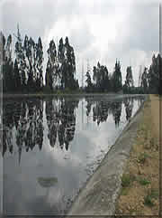
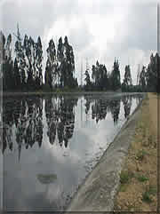

LOCALIZACION GEOGRAFICA
La Región de Sabana Occidente se caracteriza por tener un área aproximada de 111,245 hectareas, con altitudes entre 2,546 y 2,598 Metros Sobre el Nivel del Mar, una temperatura promedio de 14°C. (piso térmico Frio).
| NUMERO | NOMBRE |
|
1
2 3 4 5 6 7 8 9 10 |
Bojaca
Cota El Rosal Facatativa Funza Madrid Mosquera Subachoque Tenjo Zipacon |

Actualmente esta compuesta por 10 Municipios, que son Bojaca, Cota, El Rosal, Facatativa, Funza, Madrid, Mosquera, Subachoque, Tenjo y Zipacon.
SITIOS TURISTICOS
 

|
"Sitios de Interes Provincia de Sabana Occidente"
La laguna La Herrera está ubicada en el occidente de la Sabana de Bogotá, en los municipios de Mosquera y Madrid, sobre la margen derecha del río Bojacá. Esta laguna hace parte integral de la operación del Distrito de Riego La Ramada, que abastece de agua a poblaciones con dificultades en la obtención de este recurso en la región de Sabana Occidente para su utilización en actividades agropecuarias. La declaratoria como Reserva hídrica de dicho humedal cobra gran importancia desde el punto de vista ecológico y paisajístico,

|

|